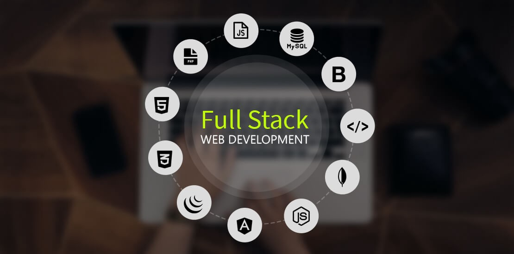

Services
UI/UX Design
User focused design should be the primary goal of any website.UI/UX involves planning and iterating a site's structure and layout to create a beautiful user experience.
+ Know MoreResponsive Development

Every Website should be built with two primary goals: Firstly, it needs to work across all devices. Secondly, it needs to be fast as possible.
+ Know MoreFront End Development

Front End Development is building out the visual components of a website. Using HTML, CSS , and Javascript, I build fast, interactive websites. This also may include a CMS, API's or other integrations.
+ Know MoreBackend Development

Backend development is the skill that powers the web. Yet it does it modestly, without fanfare—allowing people to browse their favorite sites without even knowing about all the work put in by the backend developer or team.
+ Know MoreFull Stack Development
Full stack web developers have the ability to design complete web application and websites. They work on the frontend, backend, database and debugging of web application or websites. Ex: MEAN,MERN etc.
+ Know MoreAnalytics

Web analytics is the collection, reporting, and analysis of website data. Get insights into who is browsing your site so that you can make smarter business decisions.
+ Know More